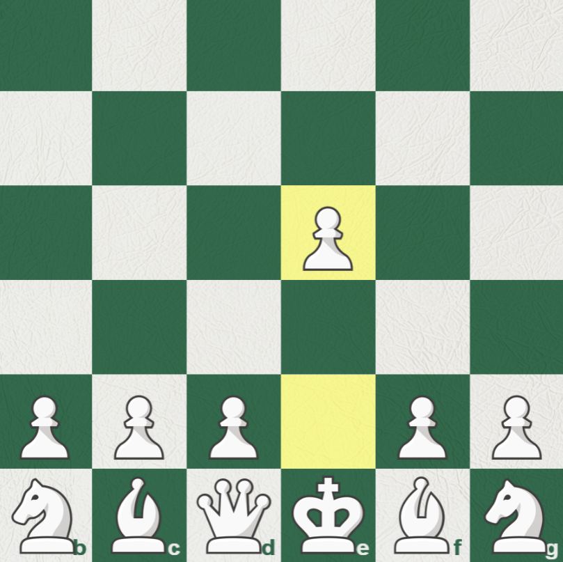
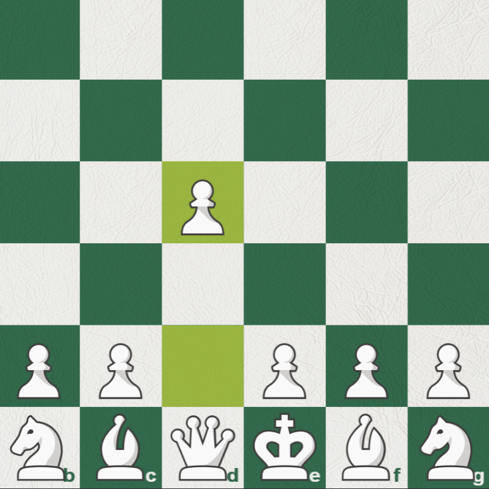

White has 20 legal moves at the start of the game, most of which aren't that good. The number varies depending on who you ask, but many would consider five starting moves as the best.
1.e4
The most popular first move in the game, pawn to e4. This move is played in more than 50% of games, where white instantly grabs the centre while opening their bishop and queen to control more squares. Games where this is played tend to be more tactical, open, and fast-paced.
1.d4
A close runner-up in popularity, pawn to d4 is the next most popular first move, played in about a quarter of all games. White focuses more on gradually building up territorial control, playing comparatively more defensive than 1.e4 to steadily improve the position before launching an attack on the kingside. Games where this is played tend to be more positional and strategic.